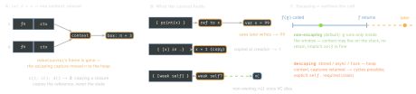

swift · folio
In one line: A closure is a function + a context holding what it captured, and it is a
reference type. By default it captures variables, not values (a captured
var moves into a shared heap box); a capture list copies values when the
closure is created. Parameters are non-escaping by default — @escaping says
the closure may outlive the call, and that is what brings heap contexts, ARC and cycles.
Download PDF Print view LaTeX source


How it works
- Capture: without a list a closure refers to the variable; reads and writes are shared with the enclosing scope.
[x]is an immutable copy made when the closure is created; for a class it copies the pointer (same object).[weak self],[unowned self],[y = expr]are the same mechanism. - Non-escaping by default (Swift 3, SE-0103): may only be called during the call, cannot be stored or captured by an escaping closure. An optional closure parameter
(() -> Void)?is implicitly escaping. - Implicit
selfin escaping closures: allowed whenselfis a value type or listed as[self](5.3, SE-0269), and afterguard let selfinside[weak self](5.8, SE-0365). withoutActuallyEscaping(f) { g in …}lends a non-escapingfto an API typed@escaping(e.g.lazy.filter); at the end of the block the runtime checksgwas not kept — if it was, crash.@autoclosure () -> T: the caller writes a plain expression, the callee decides whether and when to evaluate it (assert,precondition,:=??,:=&&,:=||,XCTAssert*,@StateObject(wrappedValue:)). Forward it by calling it:inner(msg()). Combine with@escapingto store it.@Sendable(5.5, SE-0302): may run concurrently, so every capture must beSendableand a localvarcan’t be captured at all (not even read) — copy it with[x]. Swift 6:Task {}takes asendingclosure, so a non-Sendable value may go in if nothing uses it afterwards.- Function types:
(Int) async throws -> Int;rethrowsHOFs (map).Type.methodis curried(Type) -> (Args) -> R;obj.methodis a closure that retainsobj. - Trailing closures: last closure after the parens; multiple (5.3, SE-0279): first unlabeled, the rest keep their labels.
Example — the syntax ladder
names.sorted(by: { (a: String, b: String) -> Bool in
return a < b }) // full form
names.sorted(by: { a, b in a < b }) // implicit return
names.sorted { $0 < $1 } // shorthand + trailing
names.sorted(by: <) // operator = function
users.map(\.name) // key path (5.2)
UIView.animate(withDuration: 0.3) { v.alpha = 0 }
completion: { _ in v.removeFromSuperview() } // 2 trailingExample — capture
func makeCounter() -> () -> Int {
var n = 0 // boxed: outlives the frame
return { n += 1; return n } }
let c = makeCounter(); let d = c // one shared context
c(); c(); print(d()) // 3
var x = 1
let live = { print(x) } // captures the variable
let snap = { [x] in print(x) } // copies the value now
x = 99; live(); snap() // 99, then 1
var fs: [() -> Int] = []
for i in 0..<3 { fs.append { i } } // new i each pass: 0 1 2
var j = 0
while j < 3 { fs.append { j }; j += 1 } // one j: 3 3 3
func debugLog(_ m: @autoclosure () -> String) {
if isDebug { print(m()) } } // m may never runTraps
- Loop trap:
for-inmakes a fresh binding per iteration (→ 0 1 2); onevarmutated by awhileis shared (→ 3 3 3). - Closures have no identity: not
Equatable, no:====— to remove a handler, register it under a token/ID. button.onTap = handleTappassesself.handleTap:selfis retained strongly → cycle. Wrap it:{ [weak self] in self?.handleTap() }.- An escaping closure in a struct’s
mutatingmethod cannot captureself(it isinout) — copy the values you need first. - A trailing closure inside an
if/guardcondition confuses the parser:if xs.contains(where: { $0 > 3 }) {. @autoclosurehides laziness from the caller: a side effect in the argument may run later, twice, or never.deferis not a closure: it reads the variable’s value at scope exit.